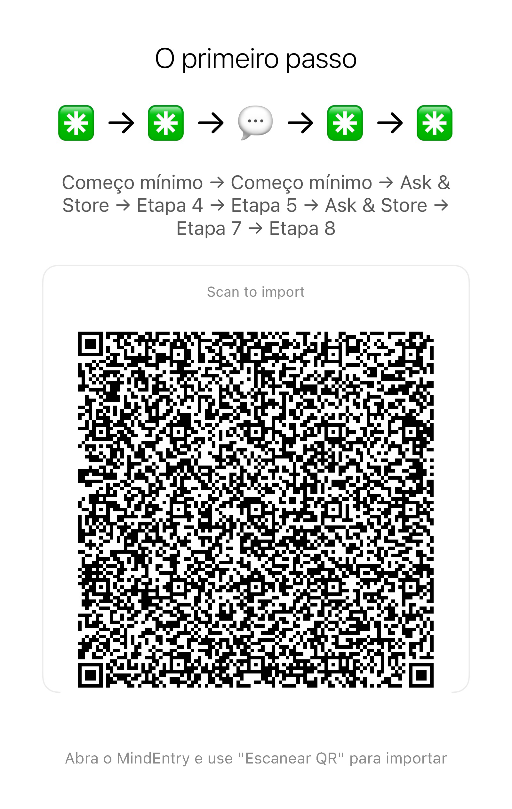

Não é otimização de vida. É um reset cognitivo.
Pequenos resets passo a passo para momentos em que a mente fica sobrecarregada, presa em loops, travada ou bloqueada.
Até mesmo um método de reset pode virar carga cognitiva se você precisar lembrar dos passos. O CogniHack funciona com o MindEntry para que o sistema mantenha a sequência por você.
Última atualização: 2026-06-02
A maioria dos “life hacks” pede que você planeje melhor, pense mais, se organize mais ou se otimize.
Mas quando a mente está sobrecarregada, presa em ciclos de pensamento, congelada ou travada, pensar mais geralmente só piora as coisas.
Nesses momentos, talvez você não precise de conselhos. Talvez precise apenas que o próximo passo seja colocado à sua frente.
Um CogniHack é uma sequência de reinicialização cognitiva executada no MindEntry. Seus passos não utilizam outros aplicativos do MINDBEBOP.
Ele pode incluir reinicializações sensoriais, pequenas ações físicas, métodos de grounding ou etapas Stateful como Your Situation e Your Step.
Se a sequência abrir outro aplicativo do MINDBEBOP, como MindFlipOut, MindShoutOut, MindZoneOut, MindBackOut, MindEaseOut ou MindBackyard, então ele passa a ser uma Recipe.
O MindEntry mantém a sequência para você, para que não seja necessário lembrar, organizar ou decidir o que vem a seguir.
Basta seguir o próximo passo visível.
Alguns CogniHacks são Stateful Recipes.
Em vez de exigir todos os detalhes antecipadamente, eles podem perguntar o que é importante no momento enquanto a sequência está em execução.
A receita mantém a estrutura. Você fornece a situação atual.
Essa resposta pode então ser utilizada ao longo do restante da sequência.
Um Stateful CogniHack pode perguntar:
Isso evita que você tenha que manter toda a sequência de reinicialização mental na cabeça, ao mesmo tempo em que permite que ela se adapte à situação real em que você está.
A situação: Seu cérebro está “carregando”. Ansiedade, pensamentos em loop ou uma paralisia de TDAH sobrecarregaram sua memória de trabalho, deixando sua mente presa dentro de si mesma.
O método 5-4-3-2-1 já é conhecido como uma técnica de grounding sensorial. Mas quando a mente está saturada, lembrar dos passos pode se tornar mais uma carga.
É quando ele é executado através do MindEntry que ele se torna um CogniHack. Você não precisa mais manter toda a sequência na cabeça — apenas seguir o passo que aparece.
Execute como um CogniHack:
Importe esta receita para o MindEntry Recipe Runner. Uma tela, um passo por vez. Sem precisar memorizar a sequência.
Método 1: Escanear para importar

Método 2: Copiar e colar o código no MindEntry
A Situação: Você sabe o que precisa ser feito, mas não consegue começar. A tarefa parece grande demais, complicada demais ou pesada demais. Em vez de começar, você se pega rolando a tela, organizando coisas, pesquisando ou pensando sobre a tarefa sem realmente agir.
A Regra dos 2 Minutos é frequentemente usada para quebrar a procrastinação. Mas, quando você está travado, descobrir como reduzir uma tarefa pode se tornar outra tarefa.
Ao executá-la no MindEntry, ela se transforma em um Stateful CogniHack. A estrutura permanece a mesma, mas a tarefa do momento é fornecida durante a execução.
Execute como um CogniHack:
Importe esta receita para o MindEntry Recipe Runner. Uma tela, um passo por vez. Sem precisar memorizar a sequência.
Método 1: Escanear para importar

Método 2: Copiar e colar o código no MindEntry
Até mesmo um método de reset pode ficar difícil de usar quando a mente já está sobrecarregada.
Se você precisa lembrar da ordem, manter os passos na cabeça ou decidir “o que fazer depois”, o próprio método cria uma nova fricção cognitiva.
MindEntry reduz essa fricção mantendo a sequência por você.
Você apenas segue o próximo passo visível.
Copyright © 2026 MINDBEBOP — All rights reserved.